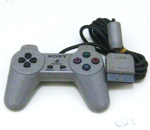

PSX - Como restaurar a aparência de um joystick
 Por Gigacom
Por Gigacom
A primeira vez em que joguei num Playstation foi bem na época do
inicio da carreira dele, no fim de 1995. Algumas poucas locadoras de
video games possuíam esse console, que diga-se de passagem, não
era dos mais baratos se comparado com o Meguinha e SNES que dominavam a
cena . A primeira vez em que joguei no cinzão, foi com aquele
primeiro controlinho bem simples, mas com um visual diferente de tudo
até então. Esse controle não possui os direcionais
analógicos que mais tarde viraram o padrão da
série Playstation, tambem não possui dispositivo algum
para fazer o joystick vibrar. Ele é menor, bem mais leve e bem
mais dificil de se achar por aí que o Dualshock.
. A primeira vez em que joguei no cinzão, foi com aquele
primeiro controlinho bem simples, mas com um visual diferente de tudo
até então. Esse controle não possui os direcionais
analógicos que mais tarde viraram o padrão da
série Playstation, tambem não possui dispositivo algum
para fazer o joystick vibrar. Ele é menor, bem mais leve e bem
mais dificil de se achar por aí que o Dualshock.
Enfim, lembrando daqueles longiquos
anos, fui procurar um Playstation exatamente igual àquele que
jogava de vez em quando na locadora, e felizmente dei a sorte de achar
um, meio amarelado é claro... mas que possuía dois daqueles
controlinhos pra jogar. Quando o pacote chegou em casa, vi que os
controles nunca foram limpos! Ou seja, a nhaca e sujeira de mais de 15
anos esteve acumulada ali sem que ninguem tivesse a descência de
limpar , mas como agora eles vieram parar nas minhas mãos,
não deu outra, foram direto para a mesa branca receber a devida
higiênização
, mas como agora eles vieram parar nas minhas mãos,
não deu outra, foram direto para a mesa branca receber a devida
higiênização . Acompanhe agora as dicas de como
restaurar esse raro controle
. Acompanhe agora as dicas de como
restaurar esse raro controle .
.
__________________________________________________________________
Peguei o mais feinho e judiado dos controles para fazer esse artigo. O coitado estava encardido na parte de cima, e debaixo dele encontrei arranhões nas partes de apoio da mão, e bastante sujeira acumulada nas inscrições. O conector do cabo estava muito arranhado e sujo tambem, o cabo então nem se fala... sujava a mão só de pegar:

Ok ok...
não sou o melhor fotografo do mundo, mas dá pra ver a
sujeira do conector e da traseira do controle numa boa.
A primeira parte do processo todo, obvio, é desmontar o treco. Ha muitas peças, botões e parafusos nesses joysticks da Sony, felizmente assim como ocorre em outros consoles, as peças se encaixam apenas nos seus devidos lugares, não ficando em posições erradas, mas mesmo assim é preciso atenção tanto na desmontagem como principalmente na montagem.
O cabo não é do tipo que se pode desplugar, ele é soldado na placa do joystick. O meu conselho aqui é tomar cuidado para que as soldas não sejam partidas, pois é comum em aparelhos eletrônicos antigos a solda se quebrar ou sair do lugar só de mover o capacitor, fio ou qualquer outra coisa que a solda esteja segurando. Notar tambem aqui a posição dos fios que ligam os botões L1R1 e L2R2 à placa, que passam atrás de um dos pontor onde é atarrachado os parafusos. Esses fios devem ficar nesse mesmo lugar na hora de montar novamente o controle.
Você vai notar tambem que os botõse L1 e R1 ficam grudados à plaquinha junto com as borrachinhas de contato por uma peça de plástico. É possivel remover essa placa, pois ele se encaixa usando apenas pressão. Pressione o conector do plastico e remova essa peça para ter acesso às borrachinhas dos botões L e R. Na imagem abaixo, o conector à esquerda ainda está preso à placa, o da direita já foi removido.
Os botões L2 e R2 ficam parafusados à parte traseira do controle. Não é preciso removê-los para realizar a limpeza, mas caso a coisa esteja feia aí, desparafuse a peça de plástico que prende os botões para retirá-los. Cuidado apenas para não perder esses parafusos e nem colocá-los em outro lugar. Note que a cor deles é dourada, diferente de todos os outros parafusos do controle.
Bem... se você chegou até aqui, verá que apesar de pequeno, ha uma infinidade de peças que compoem esse joystick. Claro que a maior cautela nesse trabalho todo é o cuidado em manter segura e bem a vista todas as peças para que nenhuma se perca. Agora, separe as partes plásticas, os botões e as borrachas, elas deverão ser lavadas para voltarem a ter a aparência devida.
Contando... uma, duas, três...dezenove pecinhas !!! Aaaarrê!!!
!!! Aaaarrê!!!
A parte mais legal de tudo é a lavagem mesmo. Aqui não tem segredo, basta usar as mesmas coisas que sua mãe usa para limpar o panelão de almoço do domingo e seus dentes cheio de casca de feijão preto: sabão, esponja de lavar louça e uma escovinha velha.
Primeiro, lave a carcaça do controle com bastante água e sabão. Use a parte macia da esponja para tirar as manchas de sujeira, a escovinha para limpar as reentranças, e a parte aspera da esponja use com cautela mas sem medo para remover a sujeira dos arranhos mais profundos. Sim meus caros, não ha sacrilégio algum nisso, usando a parte aspera da esponja, você pode retirar com facilidade toda aquela sujeira marrom que fica impregnada nos sulcos dos arranhos, pois usando apenas a escova, essa sujeira não irá sair nunca! Na foto abaixo dá pra ver com mais clareza o resultado desse processo de limpeza, principalmente no sumiço da sujeira na parte arranhada da traseira do controle, veja como ficou bem limpo.
Os arranhos aparentemente até somem, mas na verdade eles apenas assumem
a mesma cor do resto do controle, já que a sujeira vai embora num instante, lindo não ?
?
Agora vem a limpeza dos botões, borrachas e outras pecinhas. Coloque-as todas em um escorredor de macarrão por exemplo, assim você poderá limpar todas as peças e enxaguá-las numa boa, sem medo de que algo vá parar no fundo do ralo. Use a parte macia da esponja e a escova para limpar reentranças, cuidado ao limpar as borrachas, pois elas se rasgam facilmente, é melhor até limpá-las apenas com a ponta dos dedos.
Depois de limpar todas essas peças, seque-as bem e deixe de lado por enquanto. Agora é a vez da placa do controle receber uma limpeza. Normalmente, depois de um bom tempo de uso, aparecem umas manchas brancas entre os contatos e trilhas da placa do controle. Essas manchas podem ser facilmente removidas utilizando alcóol. As borrachas dos botões tambem costumam soltar um pouco de sujeira em cima da placa, sendo esta a principal causa de falha do funcionamento dos botões. Para resolver esse tipo de problema, basta utilizar um pano limpo umedecido em alcool para remover o excesso de sujeira de cima dos contatos onde os botões ficam. Para limpar o cabo e o conector do controle o procedimento é o mesmo adotado na limpeza do resto, pegue a esponja, limpe o cabo e tambem o conector, enchague depois. Não se preocupe com água acumulada dentro do conector, basta que depois você seque-o bem, sendo que para retirar a água que fica dentro do conector, basta sacudi-lo batendo em uma toalha dobrada, você vai ver que toda a água dentro dele irá sair, e se ainda assim estiver com duvida se ficou algo lá dentro, ponha o cabo pra secar perto do sol, mas à sombra, que qualquer gota de água vai se evaporar de lá rapidinho.
A direita, onde fica o direcional, foi executada a limpeza dos contatos.
Veja a diferença comparando com o outro lado que não foi limpo.
Tudo limpo e seco, vem agora a remontagem. Os botões se encaixam apenas nas suas partes respectivas, porém é preciso prestar atenção nos botões L e R, para que não fiquem de cabeça para baixo. Lembre-se que acima do botão direcional, fica uma peça em formato de X que serve para prender o direcional no lugar dele.
Os botões nos encaixes. Notar a pecinha em formato de X.
Recoloque a placa com cuidado no lugar dela, assim como os cabos dos botões L e R (veja a foto lá em cima no inicio do texto). Parafuse novamente os botões L2 e R2 no lugar deles, e reencaixe os botões L1 e R1 junto com a borracha na placa do controle. Remonte tudo, dê uma boa olhada para ver se não ficou nenhuma falha ou folga nos botões, e estando tudo certo parafuse o controle, e aprecie o resultado.
Enfim, limpinho. Até parece novo. Vai dizer que não vale a pena dar uma limpada no controle ?
?
Acesse o Trombone e comente sobre essa matéria!


Aqui, vou apresentar a restauração de um controle de SNES que comprei em péssimo estado numa feirinha da minha cidade, e que agora está lindinho funcionando perfeitamente. Confira as dicas, e faça uma restauração você também